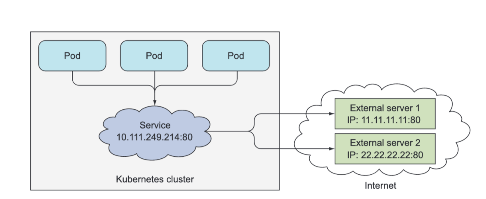
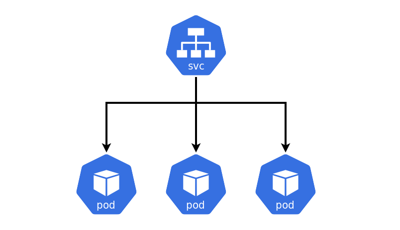

What is A Kubernetes Service?
A service in Kubernetes is a component just like a pod, but it's not a process, it's an abstraction layer that represents an IP Address. By creating a service, you now have a single and stable IP address and port that you can hit to access your pods. This address will remain unchanged throughout the whole lifetime of the service. Pods behind this service may come and go, their IPs may change, their number can go up or down, but they’ll always be accessible through the service’s single and constant IP address.
There are (4) main services in Kubernetes:
- ClusterIP
- NodePort
- Headless
- Loadbalancer
In a Kubernetes cluster, each pod gets its own internal IP address. It is important to remember though, that pods are Ephemeral, meaning the pods come and go (destroyed) very frequently. When a new pod is started, and a new pod takes the old one's place, it takes on a new IP address. So for this reason, it doesn't make sense to use pod IP addresses directly because you would have to adjust that every time a new pod gets created. With a service, you can have a stable IP address that stays even when a pod dies or a new one is created. Services are a good abstraction for loose coupling for communication within the cluster.
In short, the service creates a persistent IP address in your cluster (because pods are ephemeral) which is how everything else connects to it. The Deployment creates a ReplicaSet, which creates a Pod, and this Pod is the backend for that service.
Service Communication
A service identifies its member pods or its endpoint pods using a selector attribute. In
the service specification, in the .yaml file from which we create the service, we specify the
selector attribute that has key, value pairs defined as a list. The key, value pairs are basically labels
the pods should have, to match that selector.
- The Deployment component describes the state you want, and the state you want Kubernetes to always maintain, in regards to your Pods.
- In your Deployment, you will specify labels, which is an arbitrary key-value pair you attach to a resource, which is then utilized when selecting resources using label selectors (resources are filtered based on whether they include the label specified in the selector). A resource can have more than one label, as long as the keys of those labels are unique within that resource.
- Label selectors allow you to select a subset of pods tagged with certain labels and perform an operation on those pods.
- So, for the service, any pod tagged with the label that matches the selector that the service specifies, will be grouped under that service.
Endpoints
However, Services don’t link to pods directly. Instead, a resource sits in between — the Endpoints resource. Although the pod selector is defined in the service spec, it’s not used directly when redirecting incoming connections. Instead, the selector is used to build a list of IPs and ports, which is then stored in the Endpoints resource.
When a client connects to a service, the service proxy selects one of those IP and port pairs and redirects the incoming connection to the server listening at that location.
So in simple terms, the Endpoints object keeps a running list of all the pod's IP Addresses, so the service can forward requests to them. This is an important abstraction layer, because as pods are deleted, created, shut down, or die...they are either added to or removed from the Endpoints object.
Service Discovery
By creating a service, you now have a single and stable IP address and port that you can hit to access your pods. This address will remain unchanged throughout the whole lifetime of the service. Pods behind this service may come and go, their IPs may change, their number can go up or down, but they’ll always be accessible through the service’s single and constant IP address.
Discovery through IP Addresses
When a pod is started, Kubernetes initializes a set of environment variables pointing to each service that exists at that moment. If you create the service before creating the client pods, processes in those pods can get the IP address and port of the service by inspecting their environment variables.
You can see the pod env variables, and env variables relating to the service that the pod is communicating with by running kubectl exec POD_NAME -- env
Discovery through DNS
As the name suggests, the pod runs a DNS server, which all other pods running in the cluster are automatically configured to use (Kubernetes does that by modifying each container’s /etc/resolv.conf file).
- Any DNS query performed by a process running in a pod will be handled by Kubernetes’ own DNS server, which knows all the services running in your system.
- Each service gets a DNS entry in the internal DNS server, and client pods that know the name of the service can access it through its fully qualified domain name (FQDN) instead of resorting to environment variables.
- Important to note, that the service’s ClusterIP is a virtual IP, and only has meaning when combined with the service port. This could be why curling a service works, but pinging it doesn't.
After both the Service and Endpoints resource are posted to the server, the service is ready to be used like any regular service with a pod selector. Containers created after the service is created will include the environment variables for the service, and all connections to it's IP:port pair will be load balanced between the service's endpoints.
Written June 13, 2021